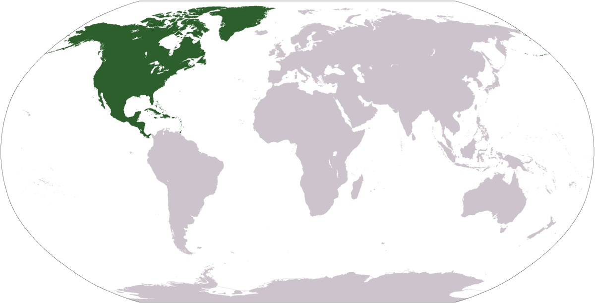
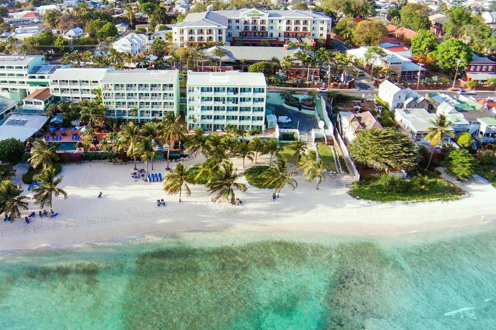
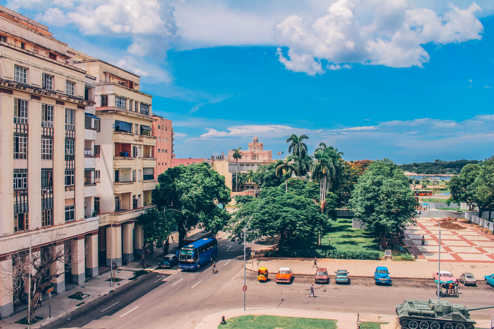

North America
North America, third largest of the world’s continents, lying for the most part between the Arctic Circle and the Tropic of Cancer. It extends for more than 5,000 miles (8,000 km) to within 500 miles (800 km) of both the North Pole and the Equator.
Bridgetown
Bridgetown is the capital and largest city of Barbados. Formerly The Town of Saint Michael, the Greater Bridgetown area is located within the parish of Saint Michael. Bridgetown is sometimes locally referred to as "The City", but the most common reference is simply "Town". It features a tropical monsoon climate (Köppen Am), with relatively constant temperatures throughout the course of the year.
Ciudad de Mexico
Mexico City, or the City of Mexico, is the capital of Mexico and the most populous city in North America. It is one of the most important cultural and financial centres in the world. It is located in the Valley of Mexico (Valle de México), a large valley in the high plateaus in the center of Mexico, at an altitude of 2,240 meters.

Havana
Havana is the capital city, largest city, province, major port, and leading commercial center of Cuba. The city has a population of 2.1 million inhabitants, and it spans a total of 781.58 km2 – making it the largest city by area, the most populous city, and the fourth largest metropolitan area in the Caribbean region.
Washington D.C.
Washington, D.C., formally the District of Columbia and commonly referred to as Washington; D.C.; or the district, is the capital of the United States. Founded after the American Revolution as the seat of government of the newly independent country, Washington was named after George Washington, the first president of the United States and a Founding Father. The city, located on the Potomac River bordering Maryland and Virginia, is one of the most visited cities in the world, with more than 20 million tourists annually.